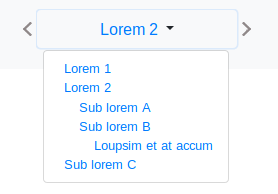
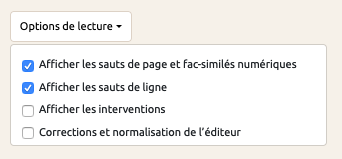

Textes
La consultation des textes se fait aux URLs suivantes :
- consultation d’un fragment identifié sur un document XML :
http://[host]:[port]/[edition]/[document].xml/[id].html - consultation d’un document XML complet
http://[host]:[port]/[edition]/doc/[document].html] - consultation « isolée », pour afficher le texte seul en dehors du site (c’est-à-dire sans menu, barre de navigation, etc., par exemple pour l’afficher dans une pop-up) :
http://[host]:[port]/[edition]/fragment_html/[id].html. L’ajout du paramètre?wrap=trueoffre une consultation dans une page HTML complète (avec appels aux css et js du site) :http://[host]:[port]/[edition]/fragment_html/[id].html?wrap=true
La feuille de transformation appliquée par défaut se trouve dans :
- pour la TEI : [projet-]MaX/ui/xsl/tei/tei.xsl ;
- pour l’EAD : [projet-]MaX/ui/xsl/ead/ead.xsl.
La surcharge de cette transformation se fait en rédigeant une XSL nommée text_hook.xsl, placée dans le dossier [projet-]editions/[edition]/ui/xsl/[ead ou tei].
Cette feuille de transformation dicte au moteur d’affichage de quelle manière les éléments des documents XML doivent être affichés (dans quel ordre, si certains éléments doivent être masqués, etc.). C’est ce fichier qui permet de régir ce que l’utilisateur verra lorsqu’il consultera, sur MaX, un document XML ou un fragment de document.
Barre de navigation

Lors de l’affichage du texte d’un fragment en TEI, la barre de navigation (sous forme de liste déroulante) permet de naviguer de fragment en fragment.
Les entrées de cette liste déroulante sont par défaut identiques aux entrées de la table des matières du document en cours de consultation.
La feuille de transformation appliquée par défaut se trouve dans : [projet-]MaX/ui/xsl/tei/nav_bar.xsl.
Il est possible de modifier son comportement par défaut par une surcharge. Pour cela, on rédige une XSL nommée nav_bar.xsl, dans le dossier [projet-]editions/[edition]/ui/xsl/tei.
Celle-ci recevra en entrée le même arbre XML que [projet-]editions/[edition]/ui/xsl/tei/document_toc.xsl ainsi que les paramètres $baseuri, $project accompagnés de :
- $selectedId : identifiant du fragment en cours de consultation
- $nextArrow : 'true' s’il existe des fragments suivant le fragment courant
- $prevArrow : 'true' s’il existe des fragments précédant le fragment courant
Options de lecture

Les options de lecture permettent au lecteur d’afficher ou masquer (via des cases à cocher) certains éléments textuels (les sauts de page ou de ligne de la version manuscrite par exemple). Ces éléments doivent être déclarés dans le fichier de configuration de l’édition : fichier [mon-edition]_config_inc.xml dans le dossier [projet-]editions/[mon-projet].
Exemple pour proposer l’option afficher/masquer les sauts de page (éléments <pb/>) et les sauts de ligne (éléments <lb/>) dans un document TEI :
[...]
<textOptions>
<checkboxOptions>
<targetClass>pb</targetClass>
<targetClass>lb</targetClass>
</checkboxOptions>
</textOptions>
[...]
Les éléments TEI <pb> sont transformés en noeud HTML <span> de classe .pb, ils pourront alors être affichés ou masqués depuis l’interface de consultation.
Il est possible de surcharger le fichier i18n.xml afin de spécifier l’option d’affichage. Par exemple :
<entry key="pb">Afficher les sauts de page</entry>
<entry key="lb">Afficher les sauts de ligne</entry>
pb et lb étant les éléments TEI déclarés dans la balise targetClass du fichier [mon-edition]_config_inc.xml dans l’exemple ci-dessus.
Pour les éléments plus complexes, comme l’affichage de certains éléments à la place d’autres, avec l’utilisation de la balise <choice> notamment, des plugins ont été développés. C’est le cas des plugins ajout, abréviation, normalisation, etc. Voir les plugins.
Pied de page
Un pied de page par défaut est configuré dans MaX. Il est appelé dans le template de mise page (voir gabarits, mise en page).
Pour le modifier, il suffit d'ajouter un fichier footer.frag.html dans le dossier [projet-]editions/[edition]/fragments (voir Pages HTML statiques).
Alignement
Cette fonctionnalité permet la consultation d’un fragment en deux versions alignées. Chaque couple de fragments alignés doit respecter une nomenclature d’identification : [prefixlang1][identifiant] et [prefixlang2][identifiant]. Les parties de texte qui sont à aligner doivent donc avoir un identifiant identique avec le préfixe de la langue.
Exemple : fr_p1 et lat_p1
La déclaration des documents qui doivent être consultés avec l’alignement se fait dans le fichier de configuration de l’édition mon-edition_config_inc.xml.
Il faut alors préciser le document (attribut @document) ainsi que les préfixes d’identifications utilisés (attributs @first-prefix et @second-prefix) dans les sources. L’attribut @first-prefix correspondant à la langue qui sera affichée en colonne de gauche.
Cela suppose que les deux fichiers portent le même nom, avec un préfixe de langue différent.
Par exemple :
<alignment document="FR_Ramusio.xml" first-prefix="fr" second-prefix="it"/>

<!-- Le fichier FR_Ramusio.xml -->
<p n="10" xml:id="fr_Ramu_2_5_p1">La terre du Brésil est située au-delà de l’équinoxiale
dans la partie australe vers l’Occident, distante de la ligne diamétrale de 10 degrés de
longitude et, commençant à 3 degrés de latitude australe, elle s’étend jusqu’à 52 degrés
vers le pôle antarctique, où se trouve le cap des onze mille vierges, à l’entrée du détroit
dit de Magellan [...]
<!-- Le fichier IT_Ramusio.xml -->
<p n="10" xml:id="it_Ramu_2_5_p1">La terra del Brafìl è posta oltra l’equinottiale
nella parte australe verso occidente, distante dalla linea diametrale gradi dieci di
longitudine, & cominciando da tre gradi di latitudine australe corre fino
à cinquantadua verso il polo antartico, doue è il capo delle vndici mila vergini nell’entrare
del stretto detto di Magallanes [...]
Récupération et affichage de fragments hors contexte
Lors de la consultation d’un fragment, il peut s’avérer nécessaire d’afficher du contenu issu d’un ou plusieurs autres fragments.
L’ajout d’une XQUERY nommée text_hook.xq dans le dossier [projet-]editions/[edition]/xq offre cette fonctionnalité. Celle-ci sera automatiquement exécutée lors de la consultation d’un fragment ou d’un document complet.
Il est également possible d’intégrer une transformation XSL au sein de cette fonction XQUERY.
Cette fonction reçoit les paramètres $baseURI, $dbPath, $project et $doc.
Exemple :
declare variable $baseURI external;
declare variable $dbPath external; (:path du document dans la db:)
declare variable $project external; (: id du projet :)
declare variable $doc external; (: nom du document :)
let $document := doc($dbPath || '/' || $doc)
return base-uri($document)
Marquage d’occurrences et focus (pour des sources en TEI)
Il est possible de mettre en évidence les occurences d’une chaîne de caractères et/ou de mettre le focus sur un fragment identifié d’une page à l’aide des paramètres search et focus pour les 2 URLs (ou routes) suivantes :
- consultation d’un fragment identifié :
http://[host]:[port]/[edition]/[document].xml/[id].html - consultation d’un document complet :
http://[host]:[port]/[edition]/doc/[document].html
Le marquage d’occurrences se fait par l’ajout du paramètre search :
http://[host]:[port]/[edition]/[document].xml/[id].html?search=[texte recherché]
Le focus sur un fragment identifié se fait par l’ajout du paramètre focus :
http://[host]:[port]/[edition]/[document].xml/[id].html?focus=[identifiant fragment]
Il est possible de combiner les deux paramètres :
http://[host]:[port]/[edition]/[document].xml/[id].html?search=[texte recherché]&focus=[identifiant fragment]